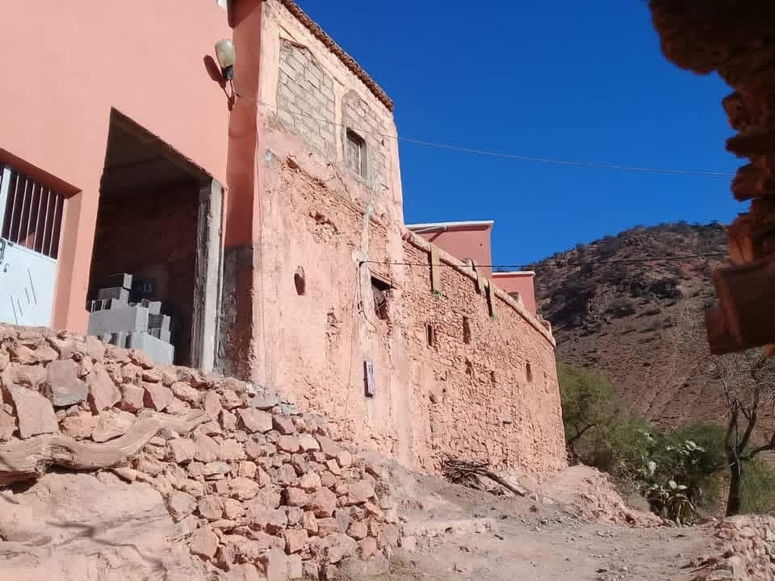
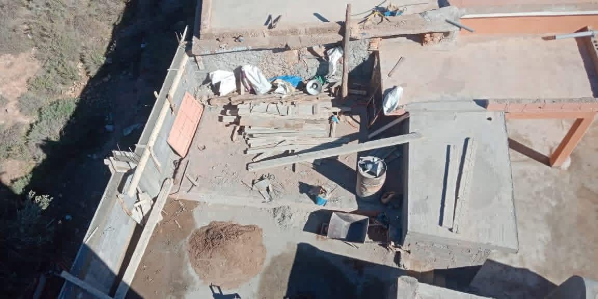
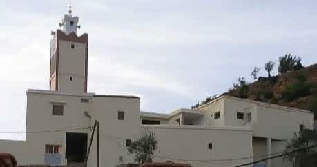

Rénovation complète de la mosquée du douar Tinlaf
Projet de restauration intégrale et d’équipement de la mosquée du douar.
يُعدّ مشروع الترميم الكلّي لمسجد الدوار وتجهيزه بمختلف المستلزمات من بين أهم أولويات جمعيتنا، باعتباره بيتًا من بيوت الله ومركزًا روحيًا أساسياً لأهالي الدوار. وانطلاقًا من مكانة المسجد الدينية والاجتماعية، حرصت الجمعية على بذل كل الجهود اللازمة لإعادة تأهيله بما يليق به كمكان للعبادة.
وقد شمل هذا المشروع ترميم البناية بالكامل، وتحسين مرافقها، إلى جانب تجهيز المسجد بالزرابي، والزليج، وسائر المستلزمات الضرورية لضمان راحة المصلين وخلق فضاء مناسب لأداء الشعائر الدينية. إن نجاح هذا المشروع جاء بفضل تضافر جهود أبناء الدوار والمحسنين، ليصبح المسجد اليوم في حلة جديدة تليق برسالته السامية ودوره المركزي داخل المجتمع.
وقد شمل هذا المشروع ترميم البناية بالكامل، وتحسين مرافقها، إلى جانب تجهيز المسجد بالزرابي، والزليج، وسائر المستلزمات الضرورية لضمان راحة المصلين وخلق فضاء مناسب لأداء الشعائر الدينية. إن نجاح هذا المشروع جاء بفضل تضافر جهود أبناء الدوار والمحسنين، ليصبح المسجد اليوم في حلة جديدة تليق برسالته السامية ودوره المركزي داخل المجتمع.
Le projet de restauration complète de la mosquée du douar et de son équipement en différents aménagements fait partie des priorités majeures de notre association, en tant que maison de Dieu et centre spirituel essentiel pour les habitants. Consciente de la place religieuse et sociale de la mosquée, l’association a veillé à mobiliser tous les efforts nécessaires pour la réhabiliter de manière digne de son statut de lieu de culte.
Ce projet a consisté en la rénovation intégrale du bâtiment et l’amélioration de ses dépendances, ainsi qu’en l’équipement de la mosquée en tapis, revêtements (zellige) et divers éléments indispensables, afin d’assurer le confort des fidèles et de créer un espace propice à l’accomplissement des rites religieux. La réussite de ce projet est le fruit de la conjugaison des efforts des habitants du douar et des bienfaiteurs, permettant à la mosquée de se présenter aujourd’hui sous un nouveau visage à la hauteur de sa noble mission et de son rôle central au sein de la communauté.
Ce projet a consisté en la rénovation intégrale du bâtiment et l’amélioration de ses dépendances, ainsi qu’en l’équipement de la mosquée en tapis, revêtements (zellige) et divers éléments indispensables, afin d’assurer le confort des fidèles et de créer un espace propice à l’accomplissement des rites religieux. La réussite de ce projet est le fruit de la conjugaison des efforts des habitants du douar et des bienfaiteurs, permettant à la mosquée de se présenter aujourd’hui sous un nouveau visage à la hauteur de sa noble mission et de son rôle central au sein de la communauté.

La mosquée du douar avant la rénovation complète.

Travaux de restauration et d’aménagement de la mosquée.

La mosquée rénovée et équipée, prête à accueillir les fidèles.